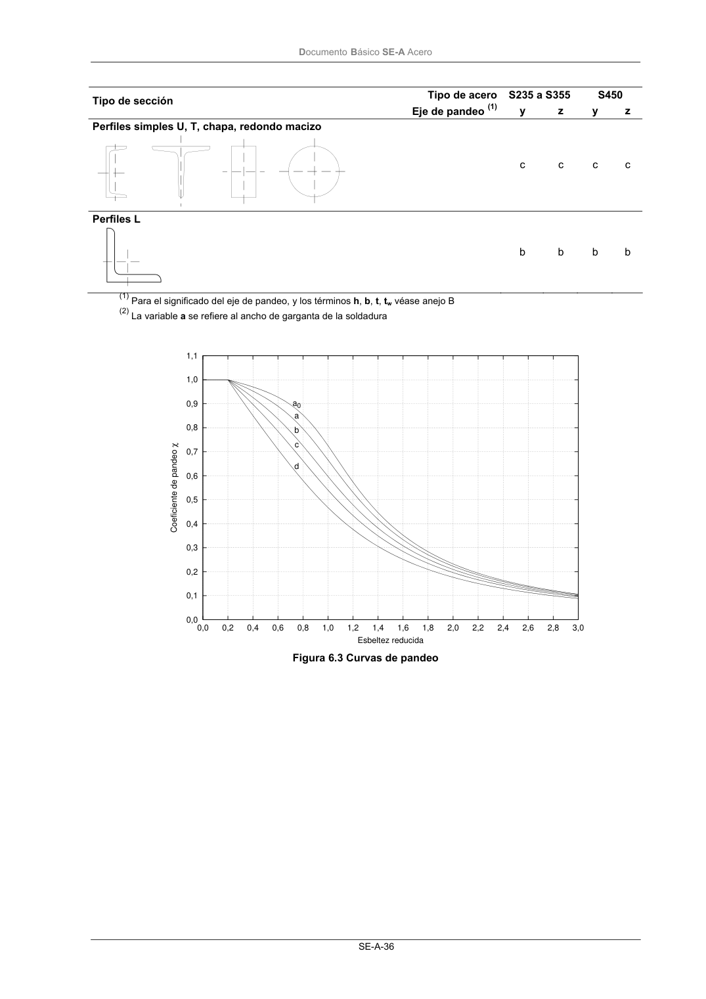
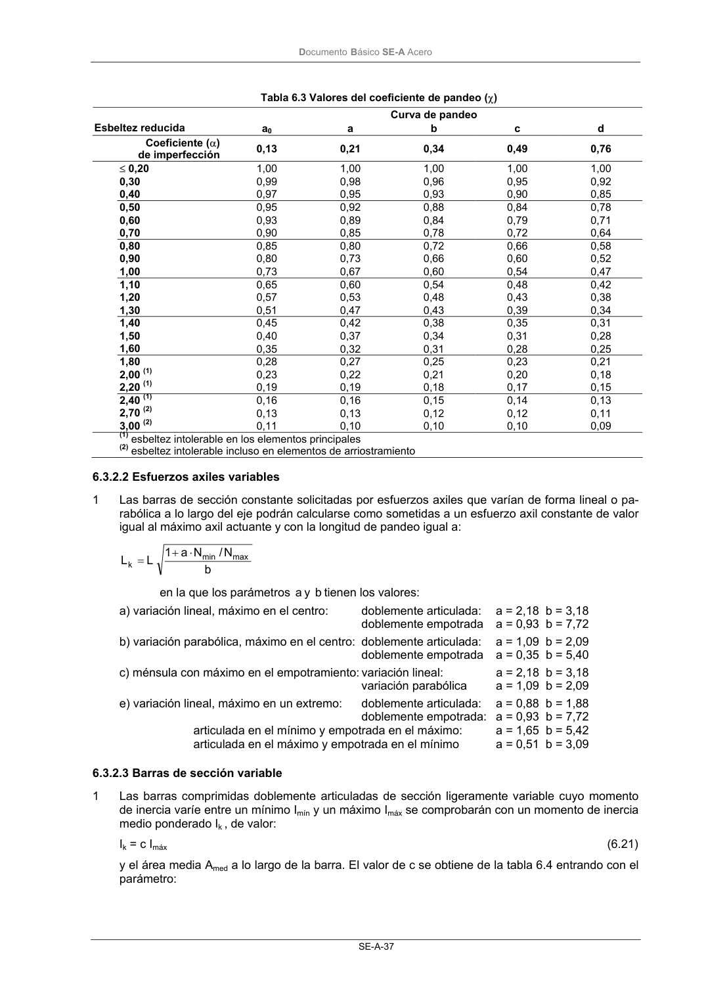

DB-SE-A · Perfiles L · versión 2007-10-23 · capa oficial
Formatos: JSON compacto · Markdown · PDF fuente
Ámbito del documento · texto del ámbito · documento y tablas
ID técnico a0073 · PDF pág. 38-39 · jerarquía no validada por persona · contrastado con el literal de la página 38 (candidato tipográfico); no validado por persona · padre: raíz
Perfiles L b b b b (1) Para el significado del eje de pandeo, y los términos h, b, t, tw véase anejo B (2) La variable a se refiere al ancho de garganta de la soldadura 0,0 0,1 0,2 0,3 0,4 0,5 0,6 0,7 0,8 0,9 1,0 1,1 0,0 0,2 0,4 0,6 0,8 1,0 1,2 1,4 1,6 1,8 2,0 2,2 2,4 2,6 2,8 3,0 Coeficiente de pandeo χ Esbeltez reducida a0 a b c d Figura 6.3 Curvas de pandeo DocumentoBásico SE-A Acero SE-A-37 Tabla 6.3 Valores del coeficiente de pandeo (χ) Curva de pandeo Esbeltez reducida a0 a b c d Coeficiente (α) de imperfección 0,13 0,21 0,34 0,49 0,76 ≤ 0,20 1,00 1,00 1,00 1,00 1,00 0,30 0,99 0,98 0,96 0,95 0,92 0,40 0,97 0,95 0,93 0,90 0,85 0,50 0,95 0,92 0,88 0,84 0,78 0,60 0,93 0,89 0,84 0,79 0,71 0,70 0,90 0,85 0,78 0,72 0,64 0,80 0,85 0,80 0,72 0,66 0,58 0,90 0,80 0,73 0,66 0,60 0,52 1,00 0,73 0,67 0,60 0,54 0,47 1,10 0,65 0,60 0,54 0,48 0,42 1,20 0,57 0,53 0,48 0,43 0,38 1,30 0,51 0,47 0,43 0,39 0,34 1,40 0,45 0,42 0,38 0,35 0,31 1,50 0,40 0,37 0,34 0,31 0,28 1,60 0,35 0,32 0,31 0,28 0,25 1,80 0,28 0,27 0,25 0,23 0,21 2,00 (1) 0,23 0,22 0,21 0,20 0,18 2,20 (1) 0,19 0,19 0,18 0,17 0,15 2,40 (1) 0,16 0,16 0,15 0,14 0,13 2,70 (2) 0,13 0,13 0,12 0,12 0,11 3,00 (2) 0,11 0,10 0,10 0,10 0,09 (1)esbeltez intolerable en los elementos principales (2)esbeltez intolerable incluso en elementos de arriostramiento


PDF fuente redistribuible: copia fiel enlazada en esta página (SHA256 verificado).